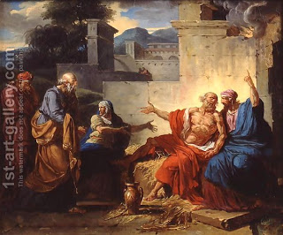

Chullin 89 - Sciatic Nerve
When the book of Job says that "God suspended the Earth on nothing," it alludes to that one who remains silent in the time of provocation, literally, "without anything," and in his merit God maintains the world.
The sciatic sinew, "gid hanasheh," is prohibited by the Torah on the account of the angel fighting with Jacob and striking him on the hip, dislocating his thighbone. The Torah says, " Therefore, the Children of Israel are not to eat the displaced sinew that is in the spoon of the thigh, to this day ." The "spoon" is the rounded, spoon-like flesh around the top of the thighbone.
The exact prohibition mentioned the sciatic sinew, and the commonly known sciatic nerve constitutes part of it. The prohibition applies both in the Land of Israel and outside, when the Temple is standing and now, to both regular animals and sacrifices. It applies to domestics and wild animals but not to fowl, because they do not have spoon-shaped flesh on their thigh.
Art: Francois-Andre Vincent - Job Being Scolded by his Wife